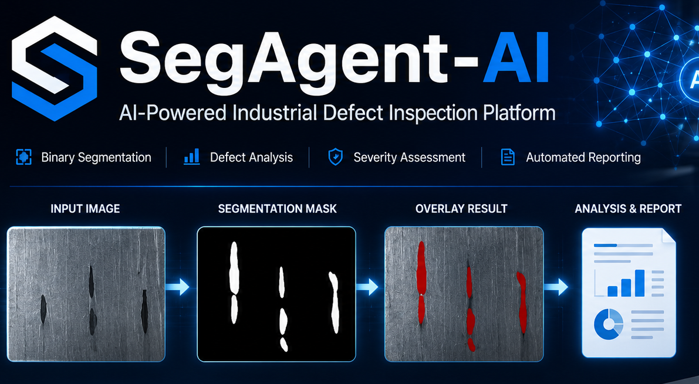

SegAgent-AI: A Dockerized AI Platform for Industrial Defect Segmentation, Severity Analysis, and Cloud Deployment
SegAgent-AI transforms a research-grade surface defect segmentation model into a deployable industrial inspection platform.